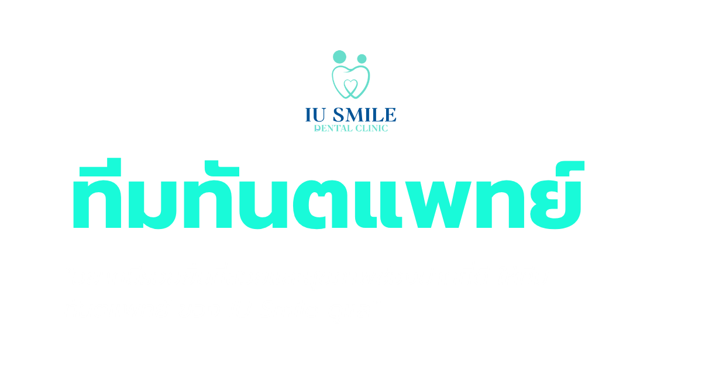
นัดหมายปรึกษา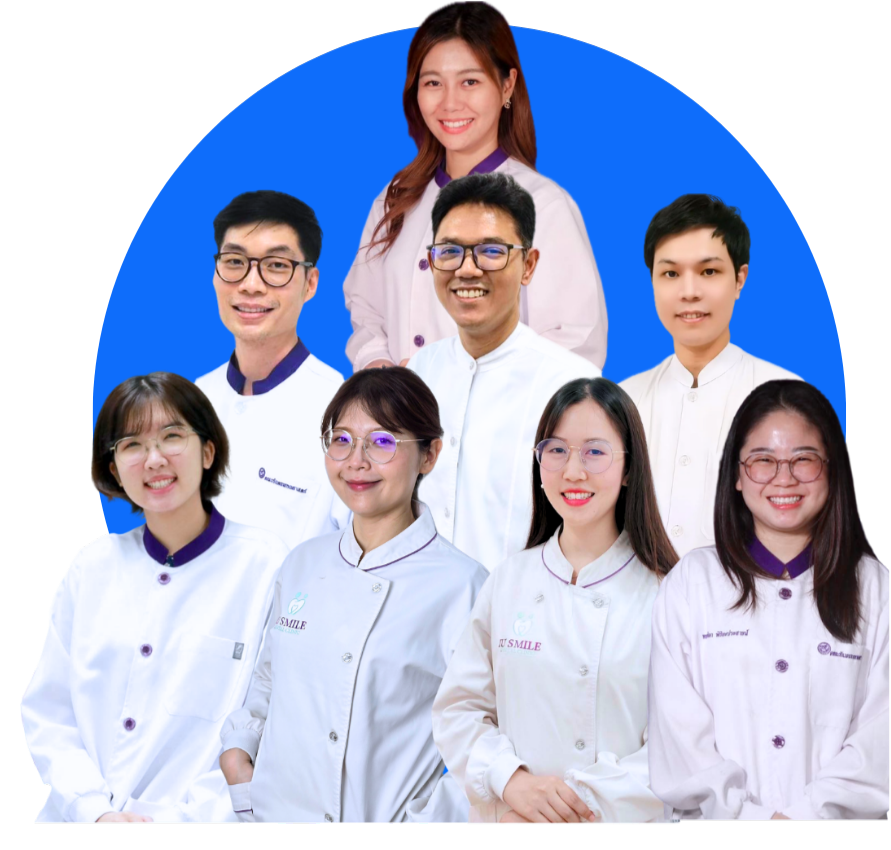
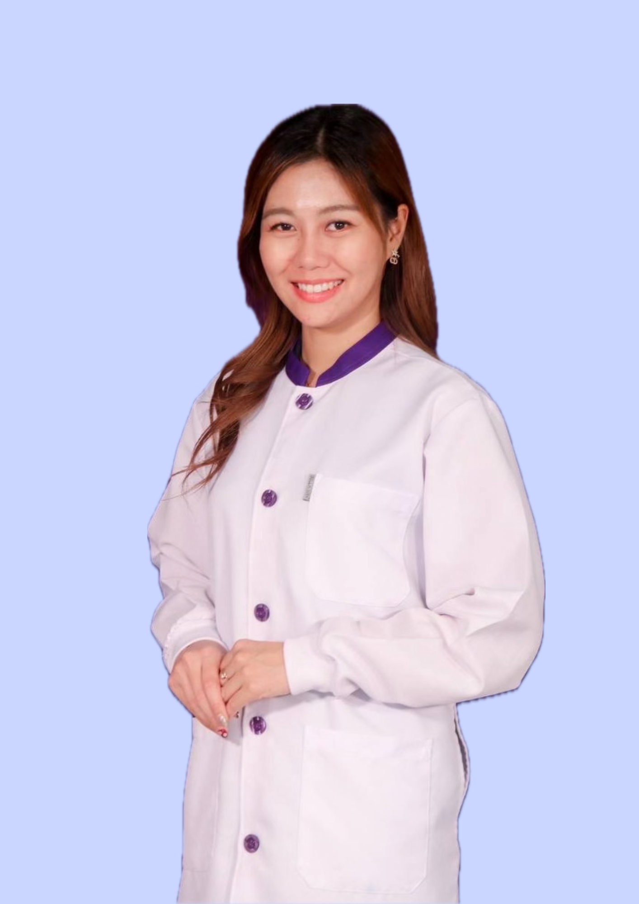
หมอฟันปลอมทันตกรรมประดิษฐ์
ทันตกรรมผู้สูงอายุ
certificateทันตกรรมจัดฟัน
ปริญญาตรีทันตแพทยศาสตร์มหาวิทยาลัยนเรศวร (เกียรตินิยมอันดับ 1)
ปริญญาโทสาขาทันตกรรมประดิษฐ์ มหาวิทยาลัยเชียงใหม่
ปริญญาเอกสาขาทันตกรรมผู้สูงอายุ
Tokyo Medical and Dental University
ประเทศญี่ปุ่น
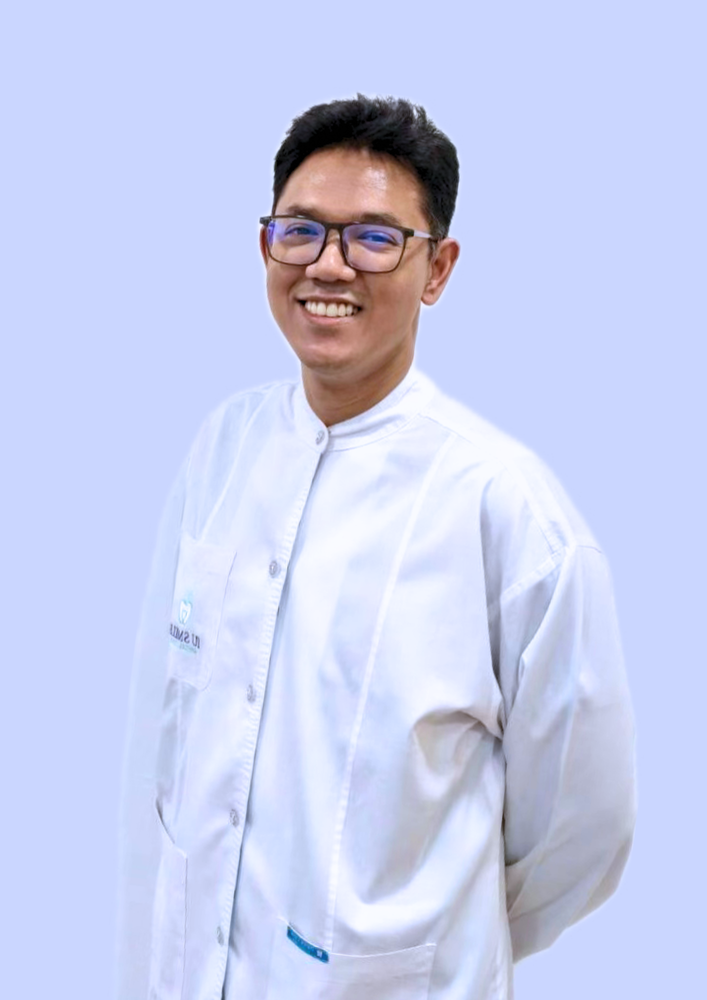
หมอรากฟันเทียมรากฟันเทียม
ศัลยศาสตร์ช่องปาก
ปริญญาตรีทันตแพทยศาสตร์มหาวิทยาลัยนเรศวร (เกียรตินิยมอันดับ 1)
ปริญญาโทสาขาศัลยศาสตร์ช่องปากและแม็กซิลโลเฟเชียลจุฬาลงกรณ์มหาวิทยาลัย
ปริญญาเอก สาขาชีววิทยาช่องปาก
จุฬาลงกรณ์มหาวิทยาลัย
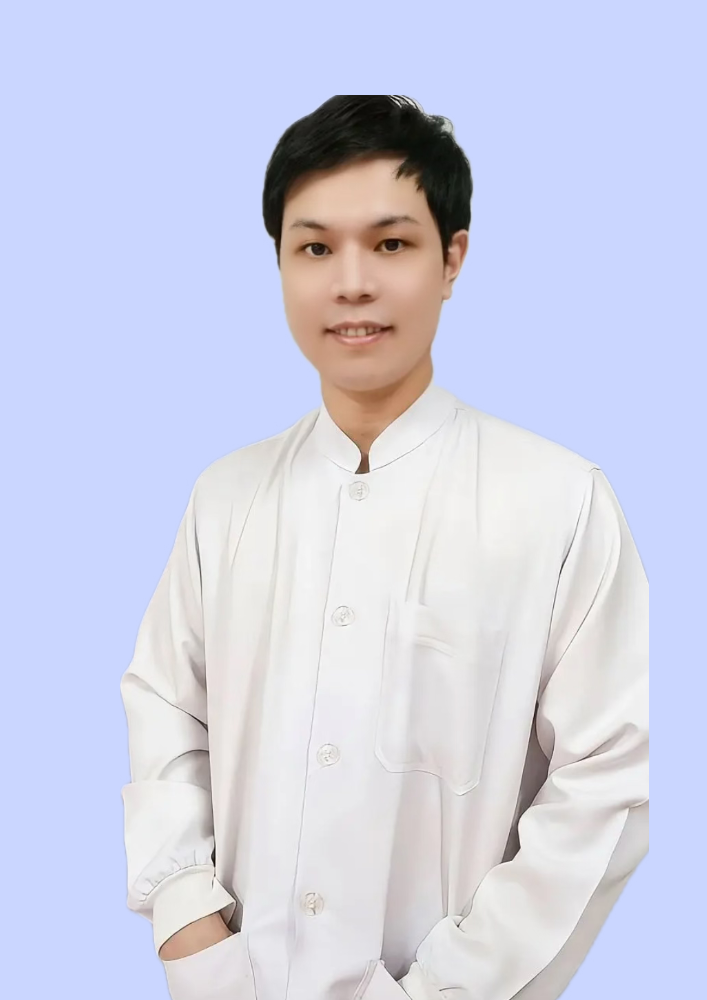
หมอเฉพาะทางจัดฟันทันตกรรมจัดฟัน
ปริญญาตรีทันตแพทยศาสตร์มหาวิทยาลัยนเรศวร (เกียรตินิยมอันดับ 1)
ปริญญาโท สาขาทันตกรรมจัดฟัน มหาวิทยาลัยนเรศวร
วุฒิบัตร(ผู้เชี่ยวชาญ)
สาขาทันตกรรมจัดฟัน
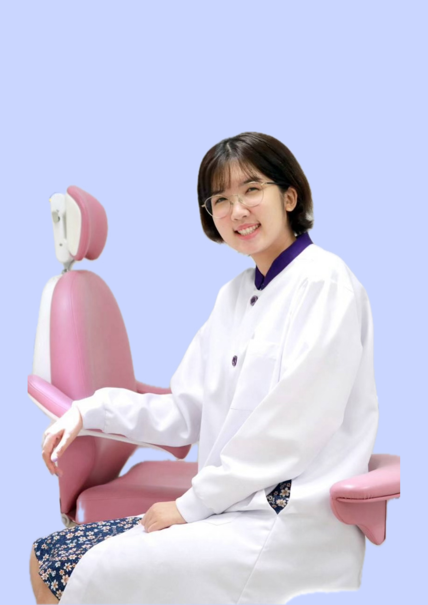
หมอทันตกรรมทั่วไปทันตกรรมทั่วไป
certificateทันตกรรมจัดฟัน
ปริญญาตรีทันตแพทยศาสตร์มหาวิทยาลัยนเรศวร (เกียรตินิยมอันดับ 1)
ปริญญาเอกสาขาพยาธิวิทยาช่องปาก
Tokyo Medical and Dental University
ประเทศญี่ปุ่น
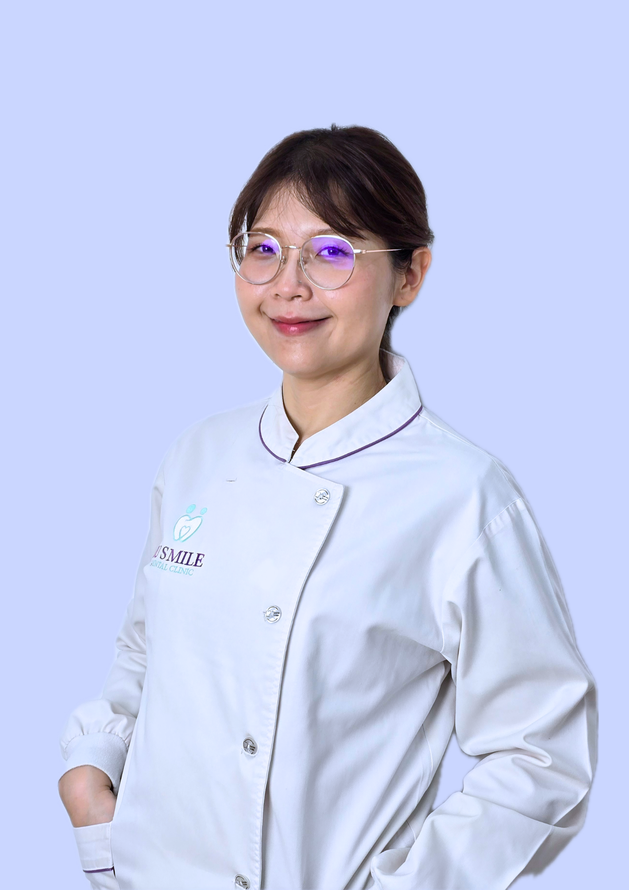
ทันตกรรมทั่วไปทันตกรรมทั่วไป
ปริญญาตรีทันตแพทยศาสตร์มหาวิทยาลัยนเรศวร (เกียรตินิยมอันดับ 2)
ปริญญาเอก สาขาการวิจัยทางทันตกรรม
Semmelweis University ประเทศฮังการี
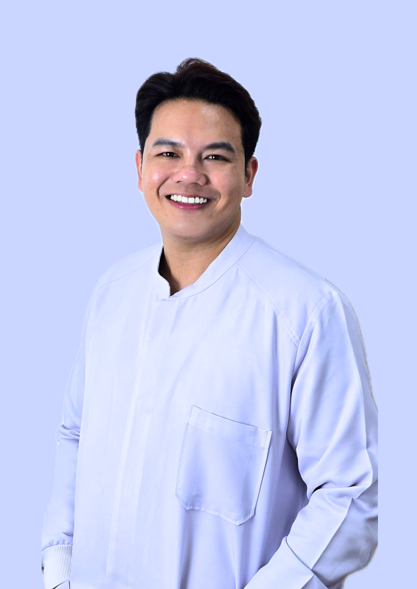
หมอรักษารากฟันรักษารากฟัน
ปริญญาตรีทันตแพทยศาสตร์มหาวิทยาลัยนเรศวร (เกียรตินิยมอันดับ 2)
ปริญญาเอก สาขาการวิจัยทางทันตกรรม
Semmelweis University ประเทศฮังการี
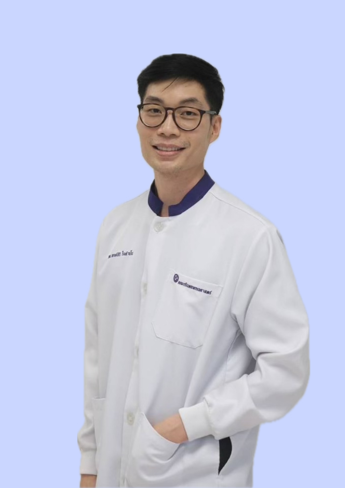
หมอทันตกรรมเพื่อความสวยงามทันตกรรมเพื่อความสวยงาม
ทันตกรรมอุดฟัน
ปริญญาตรีทันตแพทยศาสตร์มหาวิทยาลัยนเรศวร (เกียรตินิยมอันดับ 2)
ปริญญาเอก สาขาการแพทย์คลินิก(PhD in Clinical Medicine)
Semmelweis
University ประเทศฮังการี
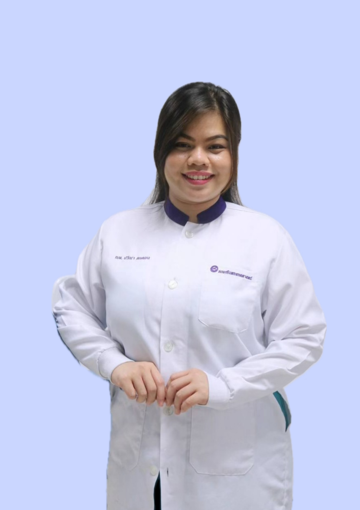
หมอฟันปลอมทันตกรรมประดิษฐ์
ปริญญาตรีทันตแพทยศาสตร์มหาวิทยาลัยนเรศวร
ปริญญาเอก สาขาวิทยาศาสตร์สุขภาพช่องปาก
มหาวิทยาลัยสงขลานครินทร์
วุฒิบัตร (ผู้เชี่ยวชาญ)สาขาทันตกรรมประดิษฐ์
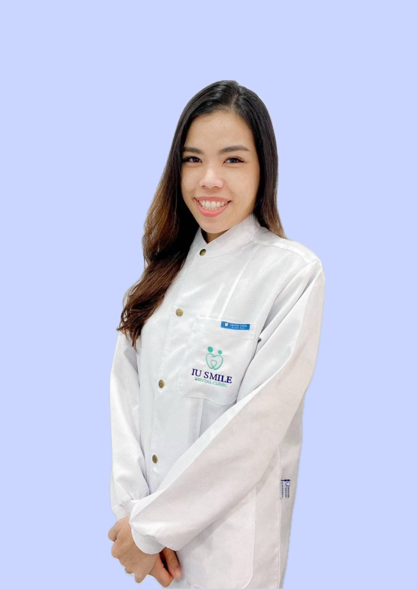
หมอฟันปลอมทันตกรรมประดิษฐ์
ปริญญาตรีทันตแพทยศาสตร์มหาวิทยาลัยนเรศวร
ปริญญาเอก สาขาวิทยาศาสตร์สุขภาพช่องปาก
มหาวิทยาลัยสงขลานครินทร์
วุฒิบัตร (ผู้เชี่ยวชาญ)สาขาทันตกรรมประดิษฐ์
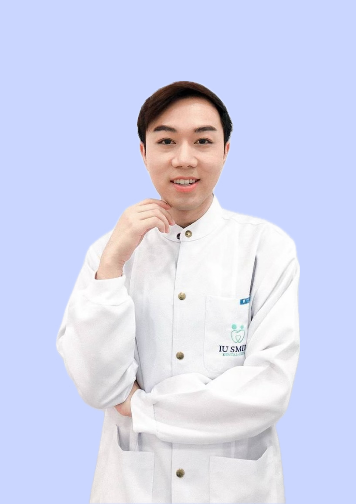
หมอฟันปลอมทันตกรรมประดิษฐ์
ปริญญาตรีทันตแพทยศาสตร์มหาวิทยาลัยนเรศวร
ประกาศนียบัตรการแพทย์คลินิก (ทันตกรรมประดิษฐ์)
มหาวิทยาลัยสงขลานครินทร์
ปริญญาเอก สาขาวิทยาศาสตร์สุขภาพช่องปาก
มหาวิทยาลัยสงขลานครินทร์
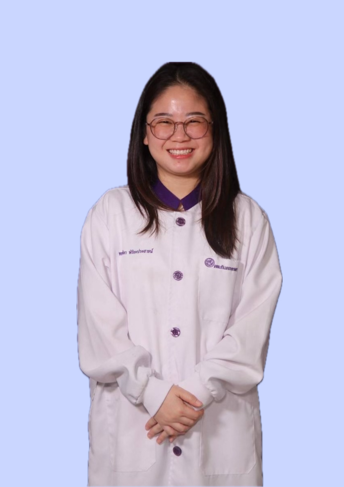
หมอเฉพาะทาง ข้อต่อขากรรไกรข้อต่อขากรรไกรและทันตกรรมบดเคี้ยว
ปริญญาตรีทันตแพทยศาสตร์มหาวิทยาลัยนเรศวร
ปริญญาเอก สาขาวิทยาศาสตร์ช่องปาก (Oral Life Sciences)
Niigata University
ประเทศญี่ปุ่น
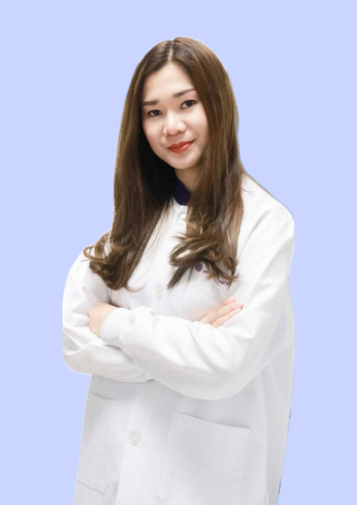
หมอรากฟันเทียมรากฟันเทียม
ศัลยศาสตร์ช่องปาก
ปริญญาตรีทันตแพทยศาสตร์มหาวิทยาลัยนเรศวร
วุฒิบัตร (ผู้เชี่ยวชาญ)
สาขาศัลยศาสตร์ช่องปากและแม็กซิลโลเฟเชียล
จุฬาลงกรณ์มหาวิทยาลัย
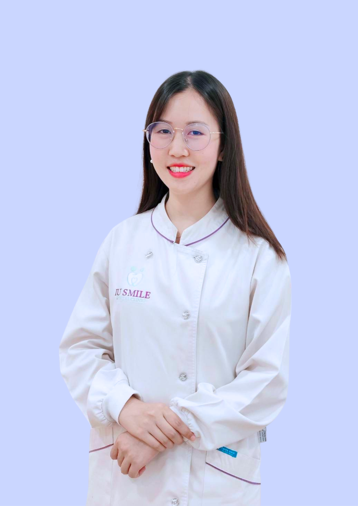
หมอโรคเหงือกทันตกรรมโรคเหงือก
ปริญญาตรีทันตแพทยศาสตร์มหาวิทยาลัยเชียงใหม่
ปริญญาโท สาขาวิทยาสตรบัณฑิต (ปริทันตวิทยา)มหาวิทยาลัยนเรศวร
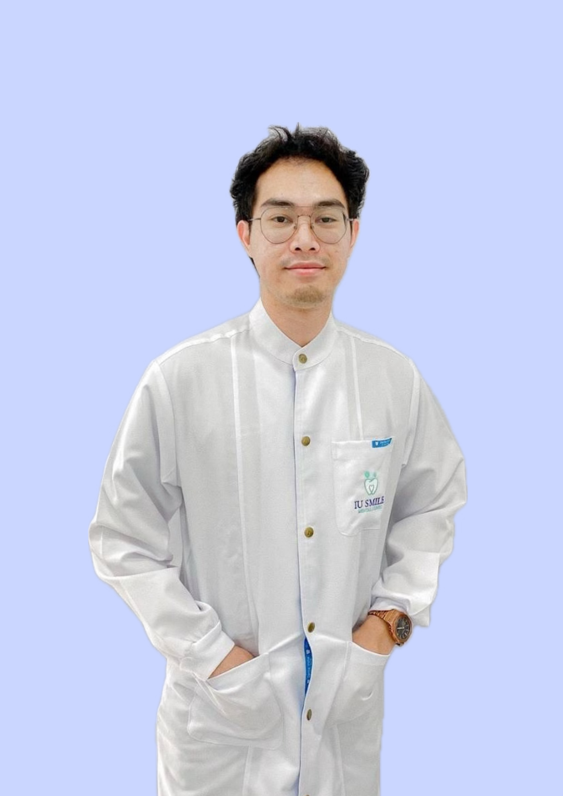
หมอเฉพาะทางจัดฟันทันตกรรมจัดฟัน
ปริญญาตรีทันตแพทยศาสตร์มหาวิทยาลัยนเรศวร
ประกาศนียบัตรการแพทย์คลินิก (ทันตกรรมประดิษฐ์)
มหาวิทยาลัยสงขลานครินทร์
ปริญญาเอก สาขาวิทยาศาสตร์สุขภาพช่องปาก
(วิชาเอกทันตกรรมจัดฟัน)
มหาวิทยาลัยสงขลานครินทร์
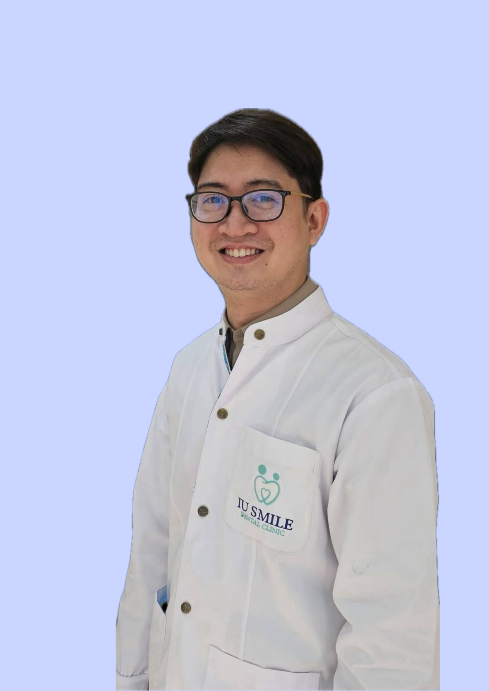
หมอทันตกรรมทั่วไปทันตกรรมทั่วไป
ปริญญาตรีทันตแพทยศาสตร์มหาวิทยาลัยนเรศวร
ปริญญาเอก สาขาทันตกรรมผู้สูงอายุ
Tokyo Medical and Dental University
ประเทศญี่ปุ่น
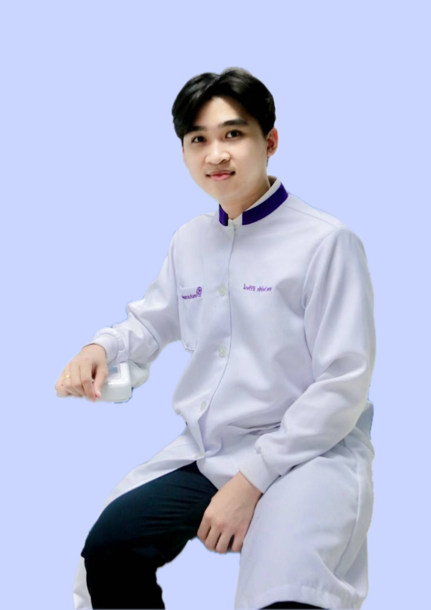
หมอทันตกรรมทั่วไปทันตกรรมทั่วไป
ปริญญาตรีทันตแพทยศาสตร์มหาวิทยาลัยนเรศวร
ปริญญาเอก สาขาทันตกรรมผู้สูงอายุ
Tokyo Medical and Dental University
ประเทศญี่ปุ่น
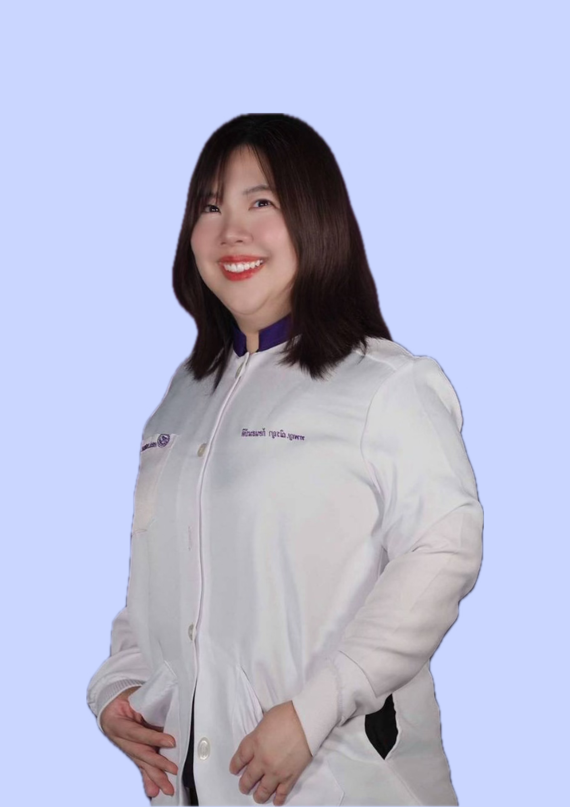
หมอทันตกรรมเพื่อความสวยงามหมอทันตกรรมเพื่อความสวยงาม
ปริญญาตรีทันตแพทยศาสตร์มหาวิทยาลัยนเรศวร (เกียรตินิยมอันดับ 1)
ปริญญาโท สาขาทันตกรรมหัตถการและความสวยงาม
มหาวิทยาลัยนเรศวร
(เกียรตินิยมอันดับ 1)
ปริญญาเอก วิทยาการโรคฟันผุและทันตกรรมหัตถการ
Niigata University
ประเทศญี่ปุ่น
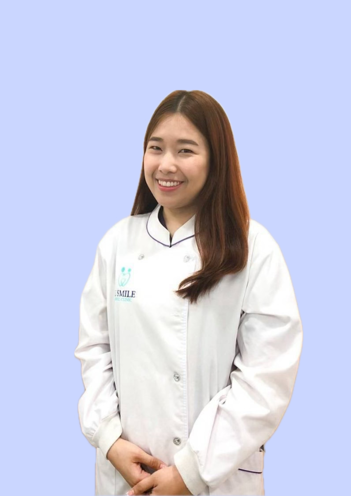
หมอทันตกรรมทั่วไปขั้นสูงหมอทันตกรรมทั่วไปขั้นสูง
ปริญญาตรีทันตแพทยศาสตร์จุฬาลงกรณ์มหาวิทยาลัย (เกียรตินิยมอันดับ
2)
วุฒิบัตรผู้เชี่ยวชาญ สาขาทันตกรรมทั่วไป
มหาวิทยาลัยมหิดล
หมอทันตกรรมทั่วไป
ปริญญาตรีทันตแพทยศาสตร์มหาวิทยาลัยนเรศวร (เกียรตินิยมอันดับ 1)
ปริญญาเอก สาขาภูมิคุ้มกันวิทยาระดับโมเลกุล
Tokyo Medical and Dental
University ประเทศญี่ปุ่น
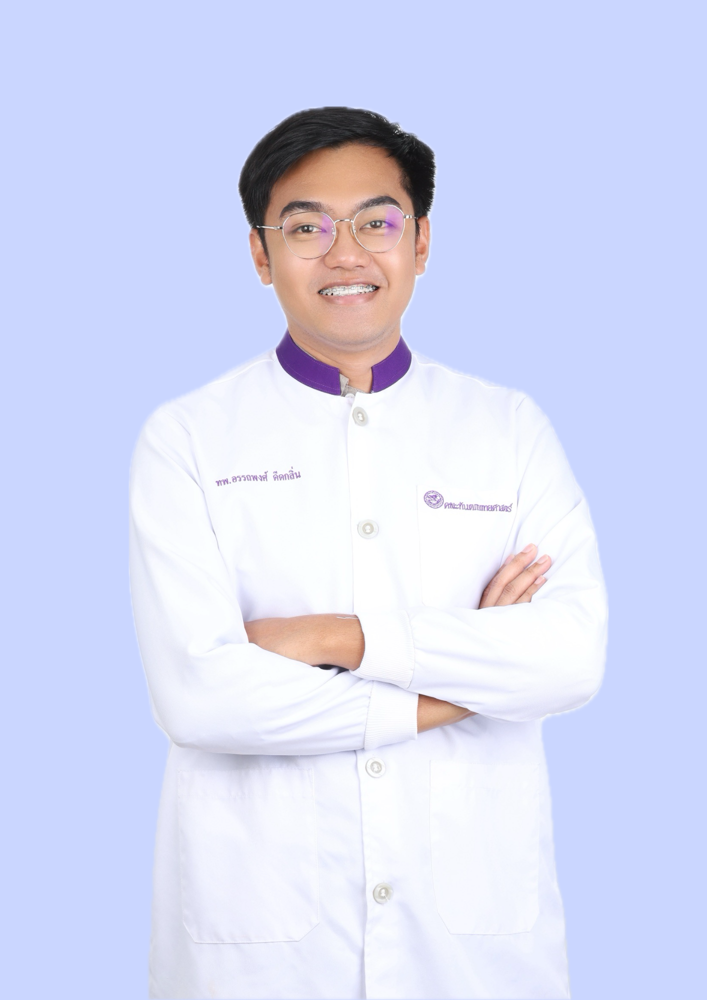
หมอเฉพาะทางจัดฟันทันตกรรมจัดฟัน
ปริญญาตรีทันตแพทยศาสตร์มหาวิทยาลัยนเรศวร (เกียรตินิยมอันดับ 1)
ทันตแพทย์ประจำบ้าน สาขาทันตกรรมจัดฟัน
มหาวิทยาลัยขอนแก่น
วุฒิบัตรเชี่ยวชาญ สาขาทันตกรรมจัดฟัน
PhD candidate สาขาวิทยาศาสตร์ช่องปาก
มหาวิทยาลัยขอนแก่น